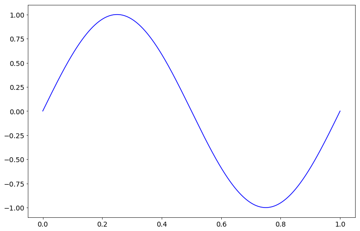
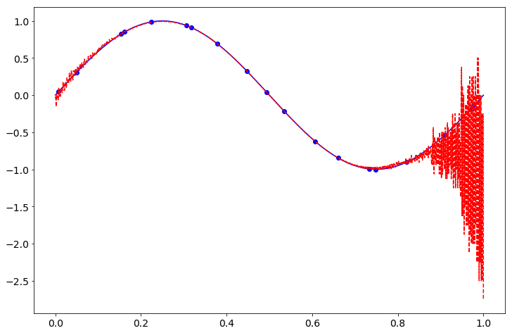

%matplotlib inline
import matplotlib.pyplot as plt
import matplotlib
matplotlib.rcParams.update({'font.size': 14})
import numpy as np
import numpy.linalg as la
MEPS = np.finfo(float).eps
import pandas as pd
from scipy.linalg import toeplitz
import scipy.fftpack as fftdef rbf(r):
return r**8#*np.log(r+MEPS)
def foo(x):
#return (x-0)**2 * x*(x-1)
return(np.sin(2*np.pi*x))
xs = np.linspace(0, 1, 1000)
plt.figure(figsize=(12,8))
plt.plot(xs, foo(xs),'b-')
plt.show()
n = 19
m = 1000
np.random.seed(5)
xs = np.linspace(0,1, n) + 1/(3*n) * np.random.randn(n)
dist_mat = np.abs(np.subtract.outer(xs,xs))
A = rbf(dist_mat)
print('cond(A) = %g' % la.cond(A))
fs = foo(xs)
cs = la.solve(A, fs)
zs = np.linspace(0,1,m)
dist_mat = np.abs(np.subtract.outer(zs,xs))
A = rbf(dist_mat)
us = A @ cs
print('L^2 error = %g' % (la.norm(us-foo(zs))/la.norm(foo(zs))) )
plt.figure(figsize=(12,8))
plt.plot(xs, fs, 'bo')
plt.plot(zs, foo(zs), 'b-')
plt.plot(zs, us, 'r--')
plt.show()cond(A) = 2.90003e+19
L^2 error = 0.452057
def make_mat(n):
#n = 4
squares = [i**2 for i in range(n)]
repeat = squares[:0:-1] + squares
A = np.array([[repeat[i+j] for i in range(n)] for j in range(n-1,-1,-1)])
return Afor n in range(3, 20):
print(la.cond(make_mat(n)))9.89897948556636
1.7767284075014292e+16
1.2955775568924936e+17
1.0922679315637744e+17
1.4483923261485347e+17
6.332253065697956e+17
3.530166397669e+17
1.9626089121877353e+18
2.0594957215084529e+18
3.484955975843744e+17
1.1984908719188946e+18
1.2892635820118796e+19
1.0006575010778156e+18
4.860151752778861e+17
2.1340950167938286e+18
1.2169903664699382e+19
3.550308364963274e+18print(la.inv(make_mat(4)))[[-3.75299969e+14 1.12589991e+15 -1.12589991e+15 3.75299969e+14]
[ 1.12589991e+15 -3.37769972e+15 3.37769972e+15 -1.12589991e+15]
[-1.12589991e+15 3.37769972e+15 -3.37769972e+15 1.12589991e+15]
[ 3.75299969e+14 -1.12589991e+15 1.12589991e+15 -3.75299969e+14]]la.cond(make_mat(3))9.89897948556636print(make_mat(4))[[0 1 4 9]
[1 0 1 4]
[4 1 0 1]
[9 4 1 0]]squares = [i**2 for i in range(4)]
toeplitz(squares, squares)array([[0, 1, 4, 9],
[1, 0, 1, 4],
[4, 1, 0, 1],
[9, 4, 1, 0]])xs = np.linspace(0,1,5)
A = toeplitz(xs, xs)
B = np.abs(np.subtract.outer(xs,xs))
print(A-B)[[0. 0. 0. 0. 0.]
[0. 0. 0. 0. 0.]
[0. 0. 0. 0. 0.]
[0. 0. 0. 0. 0.]
[0. 0. 0. 0. 0.]]Aarray([[0. , 0.25, 0.5 , 0.75, 1. ],
[0.25, 0. , 0.25, 0.5 , 0.75],
[0.5 , 0.25, 0. , 0.25, 0.5 ],
[0.75, 0.5 , 0.25, 0. , 0.25],
[1. , 0.75, 0.5 , 0.25, 0. ]])Barray([[ 0. , -0.25, -0.5 , -0.75, -1. ],
[ 0.25, 0. , -0.25, -0.5 , -0.75],
[ 0.5 , 0.25, 0. , -0.25, -0.5 ],
[ 0.75, 0.5 , 0.25, 0. , -0.25],
[ 1. , 0.75, 0.5 , 0.25, 0. ]])def toep_mult(points, x):
N = len(x)
#a = np.block([A[:,0], A[0,:0:-1]] )
a = np.block([points, points[:0:-1]])
a_hat = fft.fft(a)
x_hat = fft.fft(np.block([x, np.zeros(N-1)]))
b_hat = a_hat * x_hat # * len(a_hat) - Scipy's FFT isn't scaled
b = fft.ifft(b_hat)
return b[:N]
def toep_inv(points, b):
N = len(b)
#a = np.block([A[:,0], A[0,:0:-1]] )
a = np.block([points, points[:0:-1]])
a_hat = fft.fft(a)
b_hat = fft.fft(np.block([b, np.zeros(N-1)]))
x_hat = b_hat / a_hat
x = fft.ifft(x_hat)
print(x)
return x[:N]n = 10
np.random.seed(1)
a = np.random.randn(n)
xs = np.random.randn(n)
print(la.norm( toep_mult(a,xs) - toeplitz(a,a)@xs))6.437388654330863e-14n = 10
np.random.seed(1)
a = np.random.randn(n)
xs = np.random.randn(n)
print(la.norm( toep_inv(a,xs) - la.solve(toeplitz(a,a), xs) ) )[ 0.16443222+0.j -0.25004938+0.j -0.31711685+0.j 0.06172335+0.j
1.22919897+0.j 0.05996905+0.j -0.55549339+0.j 0.11446923+0.j
0.1301134 +0.j 0.50253061+0.j 0.28052332+0.j -0.96258566+0.j
-0.03659981+0.j 0.17173919+0.j -0.26413092+0.j 0.2059216 +0.j
-0.85643659+0.j -0.15062164+0.j 0.94782855+0.j]
1.7749059806473229a = [i**2 for i in range(4)]
A = toeplitz(a,a)
A = A[::-1]
print(A)
A = np.array(A, np.float)
A[0] /= A[0,0]
A[1] -= A[1,0]*A[0]
A[2] -= A[2,0]*A[0]
A[3] -= A[3,0]*A[0]
A[1] /= A[1,1]
A[2] -= A[2,1]*A[1]
A[3] -= A[3,1]*A[1]
A[2] /= A[2,2]
A[3] -= A[3,2]*A[2]
print(np.round(A,4))[[9 4 1 0]
[4 1 0 1]
[1 0 1 4]
[0 1 4 9]]
[[ 1. 0.4444 0.1111 0. ]
[-0. 1. 0.5714 -1.2857]
[ 0. 0. 1. 3. ]
[ 0. 0. 0. 0. ]]A[0]/9array([1. , 0.44444444, 0.11111111, 0. ])a = [i**2 for i in range(5)]
A = toeplitz(a,a)
A = A[::-1]
A = np.array(A, np.float)
print(np.sum(A[:], axis=0))[30. 15. 10. 15. 30.]from sympy import *a = symbols('a')expand(a**4 - (a+1)**4)-4*a**3 - 6*a**2 - 4*a - 1expand((a+1)**4 - 1)a**4 + 4*a**3 + 6*a**2 + 4*a